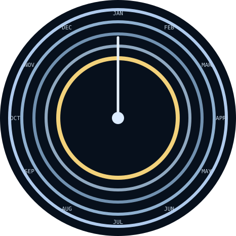

ASTROLABE · CHART TIME

YEAR outerMONTHDAYHOURMIN inner
Long press, then swipe vertically while holding to select a ring. Release, then swipe to adjust that field. Tap to accept.
ASTROLABE · CHART TIME

Long press, then swipe vertically while holding to select a ring. Release, then swipe to adjust that field. Tap to accept.